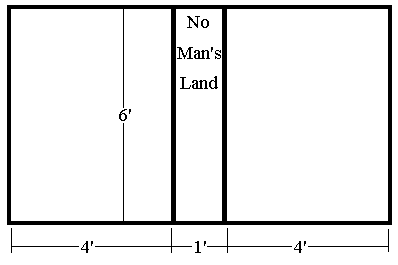

|
Dodgeball, Spring 2005
|
|
The Objective:
Your favorite sport from high school phys ed. But with robots.
The Field:
- The boundary of the field will be marked by black gaffers tape (approximately 2” wide).
- The field will be 9' x 6'. The field will be surrounded by 4’ walls composed of chicken wire.
- There will be a one foot wide "no man's land" at midfield. Its boundaries will be marked by black gaffers tape, 4' from either end.
- The playing surface white poster board. While “good” lighting will attempt to be obtained, no guarantees will be made, so design your robot will the ability to function in non-ideal lighting conditions.

The Rules:
- Defining a Hit:
A ball is "live" from the time it is released by a robot until it contacts
any agency other than the floor. The ball can bounce up to two times on the
floor before it is considered dead. A robot is "hit" when it is contacted
by a live ball, and the ball has not determined to be caught. It is possible
to hit teammates. With enough backspin, a robot may hit itself. Balls which
have bounced off of robots or walls or other balls are "dead" and may be
picked up by the robots and reused.
- Robots are allowed to catch balls. In order for a ball to be considered
a catch, the robot must maintain control of the ball in such a way that the
ball can be fired without releasing it first (i.e. the ball cannot be suspended
in a basket or dropped on the playing floor; these count as a hit). Catching
the ball in this way counts as a hit on the thrower.
- When a robot is hit three times (as judged by human referees) it is "out"
and will be removed by the human referees. A team wins by eliminating both
members of the opposing team.
- Entering no-man's land counts as a hit. If the robot touches the ground
inside of no man's land with at least two wheels, it is penalized one instant
hit. Robots will not be removed from no-man’s land. The Robot can still
fire from inside of no-man’s land, but risks being an easy target for the other team.
- If a robot crosses over to the other team’s side it will be counted the same as if the other team had hit the robot with three balls and KO’d it.
- Each robot will start with five racquetball balls (some mix of blue and teal) and may pick up more balls from the field during the game. The balls will be marked with silver coloring.
- There will be a five-minute "shot clock." It will be reset to zero every time a ball is thrown. If the five minutes expire, the match is over and the winning team will be decided based on the current score.
- All robots must be 1'x1' or smaller at the beginning of the game. Robots may expand during play. Height is unconstrained.
- Robots may not intentionally damage or alter the balls, the field of play, or (except for pelting them with racquetballs) the other robots.
- All robots must be built under a spending cap of $240. Materials already available in the lab do not count toward the price cap.
- Robots will be placed wherever the team decides to place them, as long as the robots are placed on the correct side.
- The robot cannot intentionally shed part of itself during the match. This will count as an instant disqualification for that robot and the other team will get credit for three ball hits and a KO for that robot.
- If all of the balls have come to a complete stop in no-man’s land, then the referee(s) will push an even number of balls to each teams side. If, for some reason, a ball had been lost during the match, then the team responsible (as determined by the referees) will take the penalty in the number of balls they receive.
Scoring (For the purposes of deciding a winner in matches that end with time running out, the following scoring scheme will be used):
- Every hit a team scores is worth 50 points.
- Outting an opposing robot is worth 10 points.
- Example: At the end of time, both teams have scored 3 hits but only one team lost a robot. The team with 2 robots on the field would win 160 to 150.
|
|
|